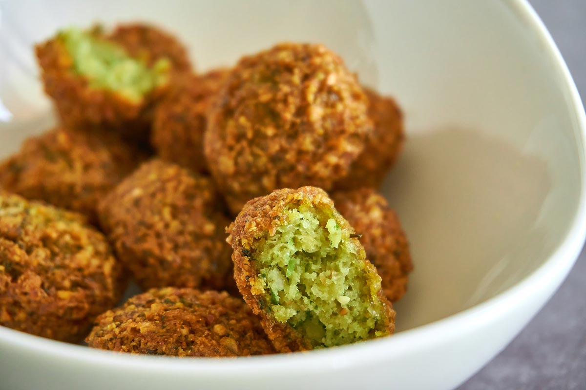

Falafel Casero
Deliciosas croquetas de garbanzos con especias.
Ingredientes
- 300 g de garbanzos secos
- 1 cebolla
- 2 dientes de ajo
- Perejil fresco
- Cilantro fresco
- 1 cucharadita de comino molido
- Aceite para freír
- Sal y pimienta

Instrucciones
- Remoja los garbanzos durante 12 horas.
- Tritura garbanzos, cebolla, ajo y especias.
- Forma bolitas y fríelas en aceite caliente.
Consejos
- Acompaña con salsa de yogur.
¡Una opción vegetariana deliciosa!